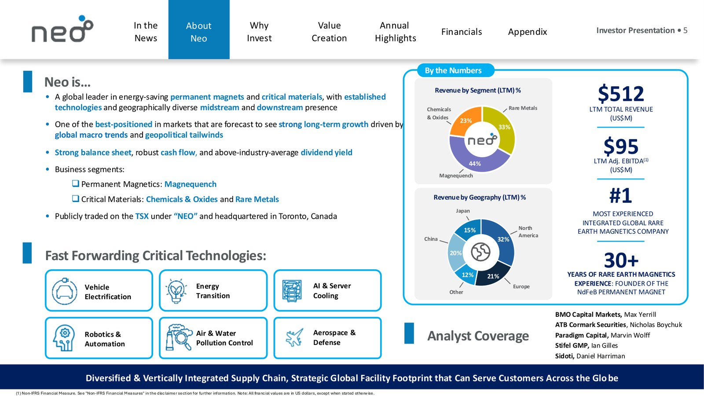
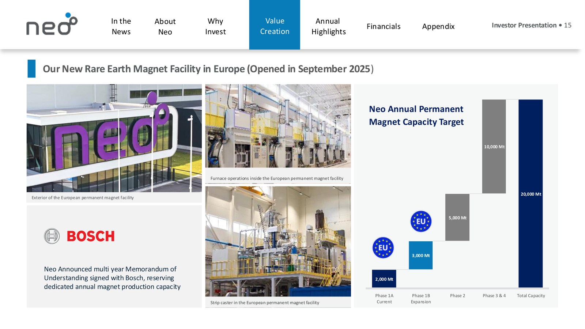
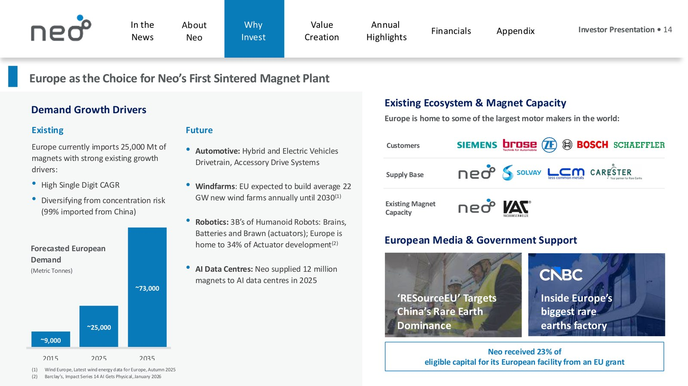

NEO PERFORMANCE MATERIALS 🇨🇦 (TSX:NEO)
Model biznesowy w obrazach

Profil spółki: przychody wg segmentów i geografii, 512 mln USD przychodu LTM, pozycja nr 1 wśród zintegrowanych producentów magnesów trwałych. Źródło: Neo Performance Materials, prezentacja inwestorska (maj 2026).

Nowa fabryka magnesów trwałych w Estonii (otwarta we wrześniu 2025) oraz docelowa moc produkcyjna w kolejnych fazach. Źródło: Neo Performance Materials, prezentacja inwestorska (maj 2026).

Europa jako rynek pierwszej fabryki magnesów: motory popytu (EV, robotyka, centra danych) i baza klientów (Siemens, Bosch, Schaeffler). Źródło: Neo Performance Materials, prezentacja inwestorska (maj 2026).
W kontekście: Separacja, rafinacja i metalurgia
Czym jest spółka. Neo Performance Materials zajmuje środkową i dalszą część łańcucha metali krytycznych: separuje i rafinuje REE, wytwarza tlenki i chemikalia, przetwarza wybrane metale specjalne oraz produkuje proszki i magnesy trwałe. Nie jest klasyczną spółką wydobywczą. Wyjątkiem jest pośredni udział w projekcie Sarfartoq na Grenlandii, który dopiero ma zapewnić dostęp do przyszłego surowca. Neo zatrudnia ponad 1 800 pracowników w swoich zakładach na świecie.
Rdzeniem europejskiej separacji jest Silmet w Estonii. Zakład ma zdolność przerobu 3 200 mT rocznie w zakresie separacji REE i mieszanych tlenków. W kwietniu 2026 r. uruchomiono tam małą linię separacji ciężkich REE, przeznaczoną do odzysku terbu i dysprozu z mieszanego węglanu REE. Według raportu za Q1 2026 linia pracowała z pełną mocą nominalną, ale jej dokładny wolumen jest NIE UJAWNIONY.
Drugim dużym aktywem segmentu Chemicals & Oxides jest NAMCO w Zibo w Chinach, dysponujące mocą 6 500 mT rocznie mieszanych tlenków REE. Oznacza to, że Neo ma przemysłowe kompetencje rafinacyjne zarówno w Unii Europejskiej, jak i w Chinach, ale część zdolności pozostaje osadzona w chińskim ekosystemie surowcowym i regulacyjnym.
Silmet prowadzi także metalurgię metali niebędących REE: ma moce 50 mT rocznie dla tantalu i 250 mT rocznie dla niobu oraz wytwarza związki hafnu. Kanadyjski zakład w Peterborough może przetwarzać 25-35 mT rocznie galu i indu. Te aktywa należą do ekspozycji na metale krytyczne, ale nie powinny być automatycznie zaliczane do czystej ekspozycji na REE.
Znaczenie biznesowe: Neo może zarabiać na etapach przetwarzania o wyższej wartości dodanej niż sprzedaż koncentratu, ale musi zabezpieczać wsad zewnętrzny, ponieważ własne wydobycie nie jest dziś podstawą działalności.
Dla inwestora: Silmet łączy europejską separację lekkich i ciężkich REE z metalurgią specjalistyczną, natomiast dokładne wykorzystanie mocy i ekonomika poszczególnych procesów są NIE UJAWNIONE.
W kontekście: Łańcuch magnesów trwałych NdFeB i SmCo
Neo działa w łańcuchu NdFeB przede wszystkim przez segment Magnequench. Produkuje szybko krzepnięte proszki magnetyczne, magnesy wiązane oraz rozwija europejską produkcję magnesów spiekanych. Ekspozycja na SmCo jest NIE UJAWNIONA. Dostarczone dowody nie potwierdzają produkcji magnesów samarowo-kobaltowych.
Proszki i magnesy wiązane. Zakład w Tianjin ma moc 7 200 mT proszku NdFeB rocznie i 400 mT magnesów rocznie. Korat w Tajlandii dysponuje mocą 1 800 mT proszku oraz 1 000 mT magnesów rocznie. Brytyjski Essex może produkować 1 000 mT magnesów rocznie, odpowiadających zdolności wytwarzania 180 mln sztuk.
Magnesy spiekane w Europie. Zakład w Narwie w Estonii ma w fazie początkowej moc 2 000 mT rocznie, z możliwością rozbudowy do skumulowanej mocy 5 000 mT. Długoterminowa mapa drogowa przewiduje 20 000 mT rocznie, ale harmonogram, nakłady oraz wiążące zamówienia pokrywające tę docelową skalę są NIE UJAWNIONE. W lutym 2026 r. zakład wyprodukował milionowy magnes od rozpoczęcia działalności.
W Q1 2026 segment Magnequench sprzedał 1 540 ton, o 18,3% więcej r/r, a jego przychód wyniósł 64,732 mln USD, rosnąc o 46,2% r/r. Dynamika przychodu była więc wyższa niż dynamika wolumenu, czemu sprzyjało środowisko wyższych cen surowców, w tym średnia cena NdPr na poziomie 116 USD/kg wobec 60 USD/kg w Q1 2025.
Znaczenie biznesowe: Neo rozszerza model od sprzedaży proszków i magnesów wiązanych w stronę europejskich magnesów spiekanych, przejmując kolejny etap wartości w łańcuchu NdFeB.
Dla inwestora: Narwa zmienia profil Magnequench, lecz docelowe 20 000 mT rocznie jest mapą rozwoju, a nie dowodem istniejącego popytu lub już osiągniętej produkcji.
W kontekście: Dywersyfikacja i budowa łańcucha poza Chinami
Neo buduje łańcuch poza Chinami na kilku poziomach: separacja REE i ciężkich REE w Silmet, magnesy spiekane w Narwie, proszki i magnesy w Korat, magnesy w Essex oraz odzysk galu i indu w Peterborough. Jednocześnie Tianjin i NAMCO pozostają istotnymi aktywami chińskimi, więc dywersyfikacja geograficzna nie oznacza pełnego odcięcia od Chin.
Korat może pozyskiwać materiał z Silmet oraz od stron trzecich spoza Chin. Neo ma również 20% udziału w GQD Special Material w Tajlandii, wykorzystywanym jako alternatywne źródło przerobu usługowego. Spośród zakładów Neo tylko Silmet pozyskuje surowiec REE od rosyjskiego dostawcy. Udział rosyjskiego wsadu w wolumenie lub kosztach Silmet jest NIE UJAWNIONY.
Znaczenie europejskiego łańcucha wzrosło po wprowadzeniu przez Chiny ograniczeń eksportowych dotyczących galu w 2023 r. oraz technologii magnesów REE pod koniec 2023 r. Eksport ciężkich REE z Chin podlega rygorystycznej certyfikacji użytkownika końcowego. Europejska linia terbu i dysprozu w Silmet może ograniczać zależność od eksportu chińskich produktów pośrednich, ale jej moc jest NIE UJAWNIONA.
Potencjalnym źródłem pierwotnym ma być Sarfartoq. Neo zawarło transakcję o wartości 35 mln USD, obejmującą 20 mln USD w gotówce i pozostałą część w akcjach. Przejmowany podmiot posiada 43,69% udziału w NNSR, właścicielu projektu. Towarzyszące transakcji memorandum przewiduje negocjacje przyszłego odbioru do 60% rudy lub koncentratu produkowanego przez projekt. Sama transakcja główna jest wiążąca, ale warunkowa zgodą rządu Grenlandii, natomiast warunki odbioru pozostają ramowe.
Obieg zamknięty ma wspierać niewiążące MOU z Cyclic Materials. Zakłada ono wysyłkę europejskich odpadów z produkcji magnesów do recyklera oraz zwrot mieszanych tlenków REE do Neo. Wolumen, ceny i termin rozpoczęcia dostaw są NIE UJAWNIONE.
Znaczenie biznesowe: strategia obejmuje europejskie przetwarzanie, tajlandzką alternatywę produkcyjną, recykling i przyszły dostęp do surowca z Grenlandii, ale każdy z tych filarów znajduje się na innym poziomie dojrzałości.
Dla inwestora: dywersyfikację należy mierzyć udziałem rzeczywistych wolumenów spoza Chin i Rosji, a takich proporcji Neo nie ujawniło.
W kontekście: Mapa kluczowych graczy w łańcuchu
Surowiec. Neo nie jest obecnie znaczącym producentem górniczym. Projekt Sarfartoq może w przyszłości dostarczać rudę lub koncentrat, lecz jego zasoby, klasa złoża, harmonogram produkcji i koszty są NIE UJAWNIONE w dostarczonych dowodach. Cyclic Materials reprezentuje z kolei źródło wtórne, oparte na recyklingu odpadów magnetycznych.
Separacja i rafinacja. Silmet stanowi europejski węzeł separacji REE, w tym uruchomionej w kwietniu 2026 r. separacji terbu i dysprozu. NAMCO zapewnia chińską skalę produkcji mieszanych tlenków REE. Pozycja Neo jest więc transregionalna, ale nie całkowicie pozachińska.
Materiały magnetyczne. Magnequench w Tianjin i Korat produkuje proszki NdFeB, które trafiają do producentów magnesów i komponentów. Essex, Korat i Narwa przesuwają Neo dalej w dół łańcucha, do gotowych magnesów. Bosch jest wskazanym partnerem strategicznym, lecz rezerwacja mocy wynika z MOU, a nie ujawnionego wiążącego zamówienia.
Konkurenci w magnesach. W magnesach wiązanych AIF wymienia Jiangwu Rare Metals, Beijing Sanjili, Chengdu Galaxy Magnets i Baotou Kerui. W magnesach spiekanych konkurencję tworzą Shin-Etsu Chemical, Proterial, TDK, Vacuumschmelze i StarGroup. Neo konkuruje więc jednocześnie z producentami chińskimi oraz rozwiniętymi technologicznie dostawcami japońskimi i europejskimi.
Metale i chemikalia specjalistyczne. W katalizatorach konkurentami są Rhodia, Magnesium Elektron i DKKK. W hafnie AIF wskazuje CNNC, Baoti SNZ, Nanjing Youtian, ATI i Western Zirconium. Rare Metals nie jest segmentem REE, ale może istotnie wpływać na wyniki całej spółki.
Finansowanie i polityka przemysłowa. Export Development Canada, rząd Estonii oraz europejski Just Transition Fund wspierają rozbudowę poprzez pożyczki i grant. Są to ważni uczestnicy finansowania łańcucha, ale pożyczki EDC pozostają długiem wymagającym spłaty.
Znaczenie biznesowe: Neo łączy kilka ogniw łańcucha, lecz nadal zależy od zewnętrznych kopalń, klientów przemysłowych, partnerów recyklingowych i finansowania publicznego.
Dla inwestora: mapa graczy pokazuje częściową integrację pionową, a nie pełną samowystarczalność od złoża do gotowego magnesu.
Ekspozycja na REE w liczbach
Skala roczna. Skonsolidowany przychód FY2025 wyniósł 478,793 mln USD, co oznacza wzrost o 0,6% r/r. Magnequench wygenerował 204,555 mln USD, o 15,8% więcej r/r. Chemicals & Oxides osiągnął 135,030 mln USD, o 7,8% mniej r/r, a Rare Metals 147,665 mln USD, o 5,5% mniej r/r. Dokładny udział przychodów pochodzących wyłącznie z REE jest NIE UJAWNIONY, ponieważ C&O obejmuje również inne chemikalia, a Rare Metals dotyczy metali niebędących REE.
pie title Przychody raportowanych segmentów FY2025 w tys. USD "Magnequench": 204555 "Chemicals & Oxides": 135030 "Rare Metals": 147665
Wykres przedstawia raportowane przychody segmentowe, a nie udziały w przychodzie skonsolidowanym. Uzgodnienie eliminacji między wartościami segmentowymi a przychodem skonsolidowanym jest NIE UJAWNIONE w dostarczonych dowodach. Źródło: wyniki Neo za Q4 i FY2025.
Wynik FY2025. Adjusted EBITDA wyniosła 75,6 mln USD, przy marży 15,8%. Segmentowo było to 28,4 mln USD w Magnequench, 23,4 mln USD w C&O i 43,2 mln USD w Rare Metals. Suma wyników segmentowych nie jest równa wynikowi skonsolidowanemu, a pełne uzgodnienie kosztów korporacyjnych i eliminacji w dostarczonych danych jest NIE UJAWNIONE. Strata netto według IFRS wyniosła 9,969 mln USD, natomiast Adjusted Net Income osiągnął 20,5 mln USD.
Najnowszy kwartał. W Q1 2026 przychód wzrósł o 27,4% r/r do 154,962 mln USD. Adjusted EBITDA osiągnęła rekordowe 36,231 mln USD, rosnąc o 111,4% r/r, a jej marża wyniosła 23,4%. Marża brutto sięgnęła 32,6%. Jednocześnie spółka wykazała stratę netto IFRS w wysokości 1,640 mln USD oraz Adjusted Net Income na poziomie 14,865 mln USD, odpowiadający podstawowemu skorygowanemu zyskowi na akcję 0,36 USD.
Magnequench wygenerował w Q1 2026 64,732 mln USD przychodu, C&O 33,182 mln USD, a Rare Metals 57,094 mln USD. Dynamiki wyniosły odpowiednio +46,2%, -30,1% i +74,5% r/r. Łączny wolumen sprzedaży spadł o 3,9% r/r do 3 194 ton, w tym Magnequench sprzedał 1 540 ton, C&O 1 565 ton, a Rare Metals 89 ton.
Moce i produkcja. Ujawnione moce obejmują 9 000 mT rocznie proszków NdFeB w Tianjin i Korat, ale ta wartość jest sumą dwóch ujawnionych mocy zakładowych, a nie oddzielną prognozą spółki. Początkowa moc magnesów spiekanych w Narwie wynosi 2 000 mT rocznie, z możliwością rozbudowy do 5 000 mT i długoterminowym planem 20 000 mT rocznie. Bieżąca produkcja tonowa REO, NdPr i gotowych magnesów jest NIE UJAWNIONA. Ujawniono natomiast osiągnięcie miliona magnesów wyprodukowanych w Narwie do lutego 2026 r.
Bilans i gotówka. Na 31 marca 2026 r. aktywa wynosiły 738,295 mln USD, a dług brutto 154,250 mln USD. Operacyjne przepływy pieniężne w Q1 2026 były ujemne i wyniosły -38,3 mln USD. Stan gotówki i dług netto są NIE UJAWNIONE w dostarczonych dowodach.
Prognoza. Początkowy przedział Adjusted EBITDA na FY2026 wynosił 75-80 mln USD, w maju został podniesiony do 100-110 mln USD, a 8 lipca 2026 r. do 140-150 mln USD. Środek aktualnego przedziału jest o 38% wyższy od środka majowej prognozy i około 90% wyższy od wyniku FY2025.
Znaczenie biznesowe: wyniki Q1 2026 pokazują wzrost wartości sprzedaży i marż mimo niższego łącznego wolumenu, co podkreśla znaczenie miksu produktowego oraz cen metali.
Dla inwestora: Adjusted EBITDA i Adjusted Net Income są miarami skorygowanymi, podczas gdy spółka nadal wykazuje stratę IFRS i ujemny operacyjny przepływ pieniężny.
Kluczowe umowy - co znaczą
Bosch. We wrześniu 2025 r. Neo przedłużyło wieloletnie MOU dotyczące magnesów wysokiej wydajności i zobowiązało się rezerwować znaczącą roczną część mocy dla Boscha. Wolumen i wartość są NIE UJAWNIONE. Strony deklarują zamiar przekształcania rezerwacji w definitywne projekty, ale samo MOU nie jest wiążącym zobowiązaniem odbioru.
Cyclic Materials. MOU z marca 2026 r. jest wprost niewiążące. Ma stworzyć transatlantycki obieg, w którym Neo przekazuje odpady z produkcji magnesów, a Cyclic dostarcza mieszane tlenki REE z recyklingu. Wolumen, ceny i minimalne zobowiązania są NIE UJAWNIONE.
Sarfartoq. Transakcja główna o wartości 35 mln USD jest wiążąca, lecz pozostaje uzależniona od zgody rządu Grenlandii. Powiązane MOU dotyczące offtake obejmuje do 60% przyszłej rudy lub koncentratu, ale służy dopiero negocjacji definitywnej umowy. Cena, minimalny wolumen, termin dostaw i mechanizm take-or-pay są NIE UJAWNIONE.
Pożyczka EDC dla Narwy. Wiążąca umowa kredytowa opiewa na maksymalnie 50 mln USD, wypłacane w dwóch transzach po 25 mln USD. Na koniec 2025 r. wykorzystany kapitał wynosił 50 mln USD. Kredyt zapada w listopadzie 2029 r., a spłaty kapitału rozpoczynają się w listopadzie 2026 r. To finansowanie inwestycji, nie kontrakt odbioru.
Pożyczka EDC dla NAMCO. Limit wynosi 75 mln USD, z czego do końca 2025 r. pozostałe zadłużenie kapitałowe wynosiło 40 mln USD. Kredyt zapada w sierpniu 2027 r. i również jest długiem, a nie dotacją.
Grant estoński. Rząd Estonii przyznał około 14,8 mln EUR z Just Transition Fund, przy stopie dofinansowania 23% kwalifikowanych kosztów projektu. Do końca 2025 r. Neo otrzymało łącznie 8,4 mln USD. Grant jest wiążący i wypłacany transzami.
Finansowanie kapitałowe. W maju 2026 r. Neo zakończyło emisję typu bought deal o wartości 115 mln CAD. Jest to pozyskanie kapitału poprzez emisję akcji, a nie finansowanie odbiorcy ani umowa handlowa.
Umowy z ceną minimalną, przedpłatami klientów oraz ujawnione wiążące umowy take-or-pay są NIE UJAWNIONE.
Znaczenie biznesowe: Neo ma twarde finansowanie budowy aktywów, ale kluczowe porozumienia handlowe z Boschem, Cyclic Materials i dotyczące odbioru z Sarfartoq pozostają ramowe.
Dla inwestora: limit finansowania, rezerwacja mocy i maksymalny udział w przyszłej produkcji opisują różne poziomy pewności i nie powinny być traktowane jak zakontraktowany przychód.
Pozycja rynkowa i udziały
Według własnego szacunku Neo, Magnequench posiada około 35-40% globalnego rynku magnesów wiązanych NdFeB oraz obsługuje 75-80% popytu na takie produkty poza Chinami. Dane pochodzą z AIF spółki z marca 2026 r. i nie zostały w dostarczonych dowodach potwierdzone przez niezależne źródło.
Wielkość globalnego rynku magnesów wiązanych NdFeB w USD lub tonach jest NIE UJAWNIONA. Formalny ranking producentów także jest NIE UJAWNIONY. Nie podano również udziału Neo w rynku magnesów spiekanych, tlenków REE, hafnu, tantalu, niobu ani galu.
W hafnie konkurenci chińscy odpowiadają za około 40% globalnej pierwotnej mocy produkcyjnej. Chiński eksport hafnu spadł w 2025 r. o około 19% r/r, do około 25 mT. W przypadku galu wysokiej czystości AIF wskazuje tylko jednego aktywnie eksportującego producenta chińskiego. Są to informacje o koncentracji konkurencyjnej podaży, a nie udziały Neo.
Znaczenie biznesowe: najmocniej skwantyfikowana pozycja Neo dotyczy niszy magnesów wiązanych NdFeB, podczas gdy pozycja w rozwijanych magnesach spiekanych nie ma ujawnionego udziału rynkowego.
Dla inwestora: udziały 35-40% i 75-80% są szacunkami samej spółki, więc pokazują deklarowaną skalę pozycji, ale nie zastępują niezależnego pomiaru rynku.
Mechanika konkurencji - na osiach
Klasa złoża i dostęp do surowca. Neo nie opiera obecnej działalności na własnej kopalni, więc musi konkurować dostępem do odpowiedniego wsadu, jakością przerobu i relacjami z dostawcami. Sarfartoq może częściowo zmienić tę sytuację, ale klasa złoża, koszty wydobycia, data uruchomienia i docelowy wolumen są NIE UJAWNIONE.
Koszt. Bezpośredni koszt produkcji Neo oraz porównanie kosztów z Lynas Rare Earths, MP Materials albo producentami chińskimi są NIE UJAWNIONE. Nie można więc na podstawie dowodów stwierdzić przewagi kosztowej. Mechanizmy pass-through pricing w większości kontraktów dostosowują ceny sprzedaży do zmian kosztów wsadu, ale nie usuwają opóźnień, ryzyka wolumenowego ani wpływu miksu.
Integracja pionowa. Neo łączy separację, tlenki, proszki i gotowe magnesy. Narwa zwiększa integrację w europejskim łańcuchu magnesów spiekanych, a Sarfartoq i Cyclic Materials mają dołożyć odpowiednio surowiec pierwotny i wtórny. Przewaga jest jednak częściowa, bo własne wydobycie nie prowadzi jeszcze produkcji, a porozumienie recyklingowe jest niewiążące.
Zależność od Chin i Rosji. Tianjin oraz NAMCO dają dostęp do chińskiej skali przemysłowej, lecz podlegają lokalnym ograniczeniom eksportowym. Silmet i Narwa stanowią europejską alternatywę, ale Silmet korzysta z rosyjskiego dostawcy wsadu. Wielkość tej zależności jest NIE UJAWNIONA. Korat i 20% udziału w GQD zapewniają dodatkową ścieżkę w Tajlandii.
Wsparcie państwa. Neo otrzymało wiążący grant około 14,8 mln EUR i finansowanie EDC do 50 mln USD dla Narwy. Takie wsparcie zmniejsza część ciężaru finansowania inwestycji, lecz pożyczka pozostaje zobowiązaniem. Łączny udział finansowania publicznego w nakładach Neo jest NIE UJAWNIONY.
Czym konkurenci podgryzają Neo. Chińscy producenci mają skalę i osadzenie w dominującym ekosystemie surowcowym. Shin-Etsu Chemical, Proterial, TDK i Vacuumschmelze konkurują doświadczeniem w magnesach spiekanych, czyli obszarze, w którym Neo dopiero skaluje Narwę. W magnesach wiązanych Neo ma deklarowaną silną pozycję, lecz działa przeciw kilku producentom chińskim wymienionym w AIF.
Znaczenie biznesowe: Neo konkuruje przede wszystkim technologią materiałową, jakością, kwalifikacją u klientów i geograficzną dostępnością łańcucha, a nie udowodnioną w raportach przewagą kosztową.
Dla inwestora: główną osią analizy jest zdolność przełożenia istniejącej pozycji w magnesach wiązanych na skalę magnesów spiekanych bez nadmiernego wzrostu kosztów, zadłużenia i ryzyka wykonawczego.
Koncentracja odbiorców i ryzyka
Koncentracja klientów. W Magnequench dziesięciu największych klientów odpowiada za ponad 61% sprzedaży segmentu, a największy za około 21%. W C&O odpowiednie wartości wynoszą około 59% i 20%. Najwyższa koncentracja występuje w Rare Metals, gdzie dziesięciu największych klientów generuje około 76% sprzedaży, a największy około 30%. Koncentracja na poziomie całej spółki oraz tożsamość największych klientów są NIE UJAWNIONE.
Mechanizm ryzyka klienta. Utrata największego odbiorcy Rare Metals może uderzyć w około 30% sprzedaży tego segmentu, zanim Neo znajdzie alternatywne zastosowania i przeprowadzi kwalifikację produktu u nowych klientów. W Magnequench znacząca rezerwacja mocy dla Boscha może zwiększać widoczność relacji, lecz brak wiążącego wolumenu nie pozwala określić przyszłej koncentracji.
Ceny metali i jakość wzrostu. W Q1 2026 cena galu wynosiła 1 883 USD/kg, rosnąc o 179% r/r z 675 USD/kg. Hafn kosztował 13 500 USD/kg, o 265% więcej r/r wobec 3 700 USD/kg, a tantal 808 USD/kg, o 158% więcej r/r wobec 313 USD/kg. Średnia cena NdPr wzrosła o 93% r/r, do 116 USD/kg z 60 USD/kg.
Mechanizmy pass-through pricing przenoszą zmiany kosztów wsadu na ceny sprzedaży w większości kontraktów. Dzięki temu przychód może rosnąć wraz z surowcami, nawet gdy wolumen nie rośnie. Nie eliminuje to ryzyka: korekta cen może odwrócić dynamikę przychodów, opóźnienie indeksacji może ścisnąć marżę, a droższy materiał zwiększa zapotrzebowanie na kapitał obrotowy.
Przepływy pieniężne i finansowanie rozwoju. Mimo rekordowej Adjusted EBITDA Q1 2026 operacyjny odpływ gotówki wyniósł 38,3 mln USD, a dług brutto wzrósł do 154,250 mln USD. Mechanizm ryzyka polega na tym, że wzrost cen wsadu, zapasów i należności może konsumować gotówkę szybciej, niż sugeruje skorygowany wynik operacyjny. Stan gotówki jest NIE UJAWNIONY.
Skalowanie Narwy. Przejście od początkowej mocy 2 000 mT do 5 000 mT, a następnie długoterminowo do 20 000 mT rocznie, wymaga inwestycji, kwalifikacji produktów i wiążących zamówień. Bosch podpisał MOU, lecz wolumen jest NIE UJAWNIONY, dlatego ryzykiem jest rozbudowa szybsza niż materializacja zakontraktowanego popytu.
Dostęp do surowca. Neo nie ma obecnie działającej własnej kopalni REE. Sarfartoq jest projektem przyszłym, transakcja wymaga zgody rządu Grenlandii, a offtake pozostaje MOU. Jednocześnie Silmet korzysta z rosyjskiego dostawcy. Zakłócenie dostaw może ograniczyć wykorzystanie europejskich aktywów nawet wtedy, gdy popyt na gotowe materiały pozostaje wysoki.
Regulacje eksportowe. Chińskie restrykcje dotyczące galu i technologii magnesów oraz certyfikacji ciężkich REE mogą wspierać popyt na łańcuch poza Chinami, ale mogą również utrudniać przepływ wsadu, technologii i produktów z chińskich zakładów Neo.
Wsparcie publiczne. Grant estoński pokrywa 23% kwalifikowanych kosztów projektu, ale pozostałe finansowanie EDC ma formę długu. Zależność całego planu inwestycyjnego od dotacji jako procent finansowania jest NIE UJAWNIONA. Inicjatywy Project Vault z lutego 2026 r. i RESourceEU z grudnia 2025 r. wspierają sektor metali krytycznych, lecz nie stanowią ujawnionego bezpośredniego finansowania Neo.
Znaczenie biznesowe: wynik Neo zależy jednocześnie od koncentracji przemysłowych odbiorców, cen metali, dostępności wsadu oraz zdolności sfinansowania i zapełnienia nowych mocy.
Dla inwestora: wzrost przychodu i Adjusted EBITDA należy rozdzielać na efekt wolumenu, cen surowców i miksu, a następnie konfrontować z wynikiem IFRS, przepływami pieniężnymi i zobowiązaniami finansowymi.
Słowniczek
- REE - pierwiastki ziem rzadkich, grupa metali wykorzystywanych między innymi w magnesach, katalizatorach i elektronice.
- NdFeB - magnes neodymowo-żelazowo-borowy, dostępny między innymi w odmianie wiązanej i spiekanej.
- SmCo - magnes samarowo-kobaltowy, odporny na wysokie temperatury i korozję; ekspozycja Neo jest NIE UJAWNIONA.
- NdPr - mieszanina neodymu i prazeodymu, podstawowy surowiec magnetyczny dla wielu magnesów NdFeB.
- REO - tlenki pierwiastków ziem rzadkich, produkty pośrednie separacji i rafinacji.
- mT - tona metryczna, jednostka masy odpowiadająca tonie.
- USD/kg - dolary amerykańskie za kilogram, jednostka ceny materiału.
- Toll processing - przerób usługowy materiału należącego do innego podmiotu.
- MOU - memorandum of understanding, zwykle ramowe porozumienie określające zamiary stron; może być niewiążące.
- Offtake - umowa odbioru przyszłej produkcji surowca lub produktu.
- Take-or-pay - mechanizm zobowiązujący odbiorcę do odebrania uzgodnionego wolumenu albo zapłaty mimo braku odbioru.
- Adjusted EBITDA - wynik operacyjny przed odsetkami, podatkami i amortyzacją, skorygowany o pozycje wskazane przez zarząd.
- Adjusted Net Income - skorygowany wynik netto po wyłączeniu pozycji określonych przez zarząd.
- IFRS - międzynarodowe standardy sprawozdawczości finansowej.
- JTF - Just Transition Fund, europejski Fundusz na rzecz Sprawiedliwej Transformacji.
- Bought deal - emisja akcji, w której gwarant emisji z góry kupuje oferowany pakiet od emitenta.
- Pass-through pricing - mechanizm umowny dostosowujący cenę sprzedaży do zmian kosztu surowca lub innego składnika wejściowego.
Źródła
- Neo Performance Materials - strona korporacyjna i profil działalności - https://www.neomaterials.com/
- Neo Performance Materials - Annual Information Form 2026, aktywa, moce, konkurencja, klienci i finansowanie - https://www.neomaterials.com/wp-content/uploads/2026/03/NPM-AIF-2026.pdf
- Neo Performance Materials - wyniki Q4 i FY2025 - https://www.neomaterials.com/neo-performance-materials-reports-fourth-quarter-2025-results/
- Neo Performance Materials - wyniki Q1 2026 - https://www.neomaterials.com/neo-performance-materials-reports-first-quarter-2026-results/
- Neo Performance Materials - prezentacja wynikowa Q1 2026 - https://www.neomaterials.com/wp-content/uploads/2026/05/Q1-2026-Earnings-Webcast-Presentation.pdf
- Neo Performance Materials - MD&A za Q1 2026 - https://www.neomaterials.com/wp-content/uploads/2026/05/NPM-Q126-MDA.pdf
- Neo Performance Materials - podwyższenie prognozy Adjusted EBITDA na FY2026 - https://www.neomaterials.com/neo-performance-materials-raises-full-year-2026-adjusted-ebitda-guidance/
- Neo Performance Materials - uruchomienie linii separacji ciężkich REE w Silmet - https://www.neomaterials.com/neo-successfully-commissions-heavy-rare-earth-separation-small-scale-production-line-in-europe/
- Neo Performance Materials - strategiczne MOU z Bosch - https://www.neomaterials.com/neo-extends-strategic-partnership-for-high-performance-magnets-with-bosch/
- Neo Performance Materials i Cyclic Materials - niewiążące MOU dotyczące recyklingu - https://www.neomaterials.com/neo-performance-materials-and-cyclic-materials-sign-non-binding-mou-to-advance-trans-atlantic-circular-rare-earth-supply-chain/
- Neo Performance Materials - transakcja dotycząca projektu Sarfartoq - https://www.neomaterials.com/neo-partners-with-greenland-mines-to-advance-sarfartoq-rare-earth-project/
- Neo Performance Materials - emisja akcji o wartości 115 mln CAD - https://www.neomaterials.com/neo-performance-materials-announces-completion-of-c115-million-bought-deal-treasury-offering-of-common-shares/